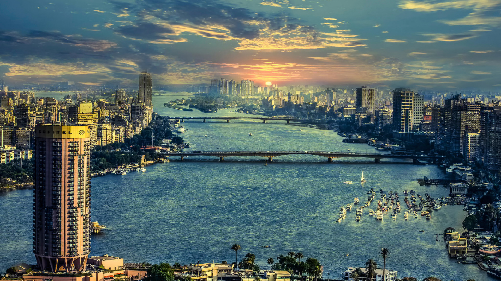
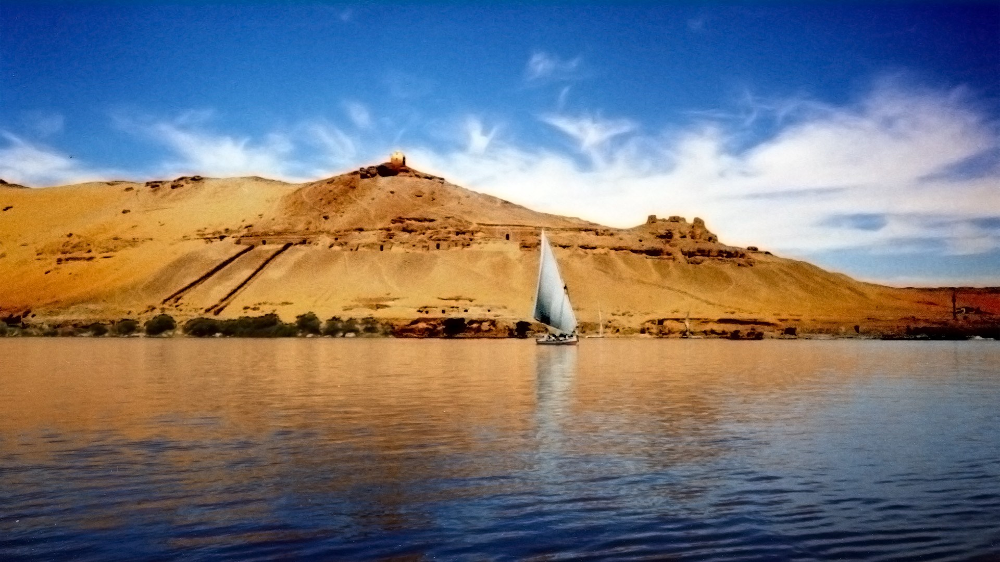
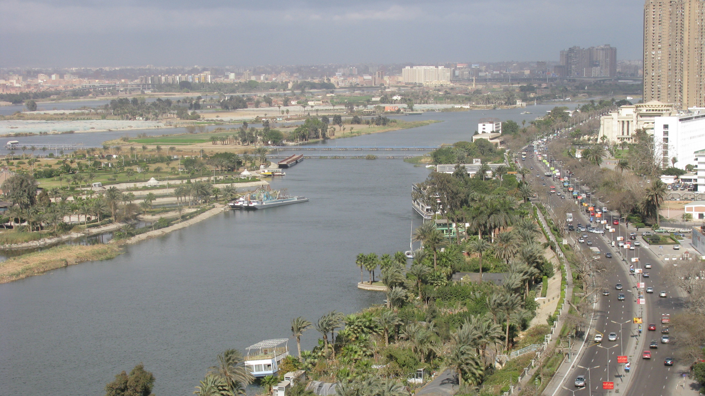

Река Нил
Нил – одна из самых протяженных в мире рек, текущая с юга на север Африки. Она известна своей древней историей и расположенными на ее берегах археологическими комплексами. В плодородной долине в нижнем течении Нила, которая дала жизнь древнеегипетской цивилизации, сохранились Великие пирамиды Гизы и Большой сфинкс. Туристы часто путешествуют между городами Луксор и Асуан на роскошных круизных лайнерах или фелуках – традиционных парусных лодках.


Нил — река в Африке, одна из величайших по протяжённости речных систем в мире. Слово «Нил» происходит от греческого названия реки «Нейлос» (Νεῖλος). Река берёт начало на Восточно-Африканском плоскогорье и впадает в Средиземное море, образуя дельту площадью 24 тыс. км². Среднегодовой расход воды в устье Нила 2900 м³/сек. В верхнем течении принимает крупные притоки — Эль-Газаль (левый) и Асуа, Собат, Голубой Нил и Атбара (правые). Ниже устья правого притока Атбары Нил течёт по полупустыне, не имея притоков на протяжении последних 3000 км.
Водная система Нила считается самой длинной на Земле. Однако, по мнению бразильских исследователей, самая длинная речная система у Амазонки — по этим данным, её длина составляет 6992 километра, в то время как длина системы Нила — 6852 километра. Площадь бассейна реки Нил составляет 3349 тыс. км². Исток находится в Руанде, это река Рукарара, впадающая в реку Кагера. Сток воды сильно и резко изменяется в течение года. Суммарная длина судоходных участков составляет 3,2 тыс. км. Воды реки используются для орошения и производства электроэнергии. В дельте и долине Нила проживает почти все население и базируется почти вся экономика Египта. Крупнейшими городами являются Каир, Хартум, Асуан, Александрия.
